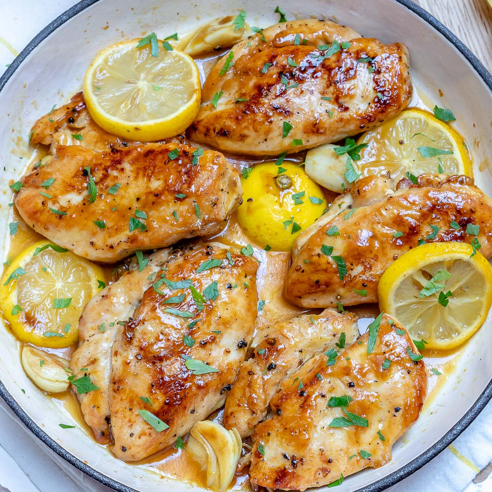

Lemon chicken

Lemon chicken is yummy and simple
Heres how you make it
Ingredients
- 3 to 4 pounds chicken parts (thighs and legs recommended), skin-on, bone-in, trimmed of excess fat
- 4 teaspoons lemon zest (about zest from 2 lemons)
- 1/3 cup lemon juice
- 2 cloves garlic, crushed
- 2 tablespoons fresh chopped thyme (or 2 teaspoons dried)
- 2 teaspoons fresh chopped rosemary (or 1/2 teaspoon dried)
- 1 teaspoon kosher salt
- 1 teaspoon black pepper
- 2 tablespoons butter, melted
- 1 Lemon slices for garnish
Instructions
- Marinate chicken: Place lemon juice, lemon zest, garlic, thyme, rosemary, salt, and pepper in a large, non-reactive bowl, whisk to combine.
With the tip of a sharp knife, cut into the underside (skinless) of each chicken piece one or two times by about 1/2 an inch. (This will help the marinade penetrate.)
Place the chicken pieces in the bowl and turn to coat with the marinade. Place in the refrigerator and marinate for 1 to 2 hours.
- Place chicken in baking dish, brush with butter: Preheat oven to 425°F. Remove chicken from marinade and place in a single layer in a large baking dish, skin side up. Reserve the marinade. Use a pastry brush to brush melted butter on each piece of chicken.
- Bake and baste with marinade: Bake for 20 minutes and baste the chicken pieces generously with the reserved marinade. Continue baking for another 15 to 25 minutes (a total of 35 to 45 minutes), until the skins are crispy brown, and the chicken is cooked through, juices running clear (internal temperature of 165°F).
Depending on the size of the breasts, they may be ready before the thighs, so if you are cooking a mix of chicken parts, keep that in mind, you may have to take them out of the oven before the thighs.
- Let the chicken rest: Remove from the oven and let the chicken rest, covered in foil, for 10 minutes before serving.
- Save meat juices to serve with chicken: Pour the juices from the pan into a serving bowl. Use a tablespoon to skim the fat off the top (save the fat for cooking with later, or discard, but do not discard down the drain or it will solidify and clog your drain).
Serve the chicken with the juices on the side or a little poured over the top of the chicken..
NUTRITION FACTS (PER SERVING)
599 calories | 31g fat | 3g carbs | 73g protein